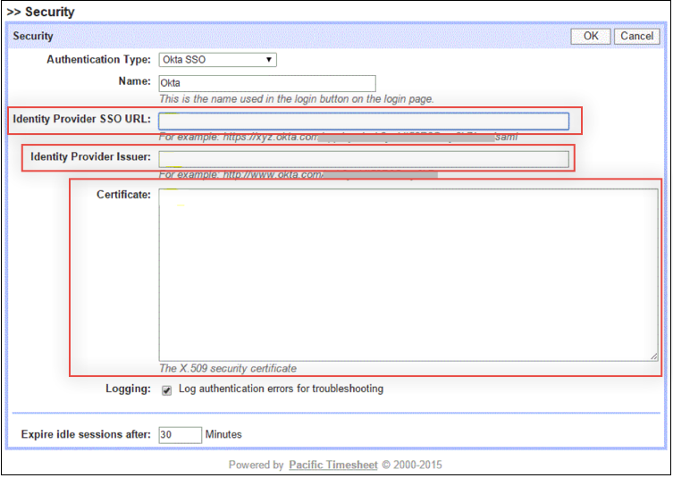
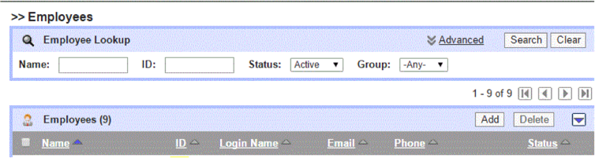
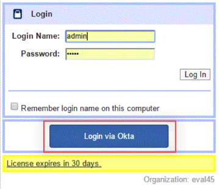

Login to Pacific Timesheet as an administrator.
Navigate to System > Security, then click the Edit button.
Enter the following information (screen shot at end of step for reference), click OK when done:
Identity Provider SSO URL: Copy and paste the following into this field:
Sign into the Okta Admin Dashboard to generate this variable.
Identity Provider Issuer: Copy and paste the following into this field:
Sign into the Okta Admin Dashboard to generate this variable.
Certificate: Copy and paste the following into this field (note that this is in PEM Text Format):
Sign into the Okta Admin Dashboard to generate this variable.

Set up the Pacific Timesheet account to match the Okta account by doing the following:
In Pacific Timesheet, select the Employees tab.
Specify either the employee ID, Login name, or email address to match that of the Okta user account.

Done!
Notes:
SP-initiated flows and IdP-initiated flows are supported.
Just In Time (JIT) provisioning is not supported.
For SP-initiated flows, at login, click the Login via Okta button:
